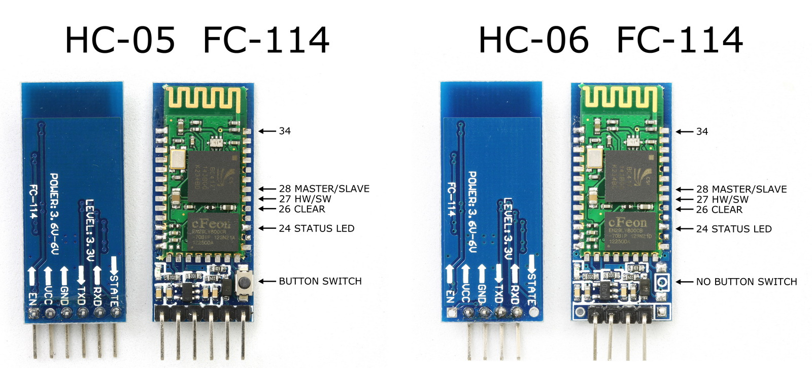
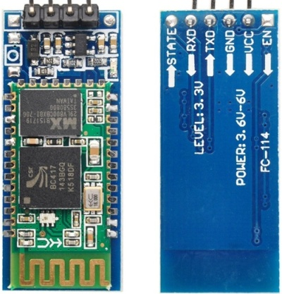
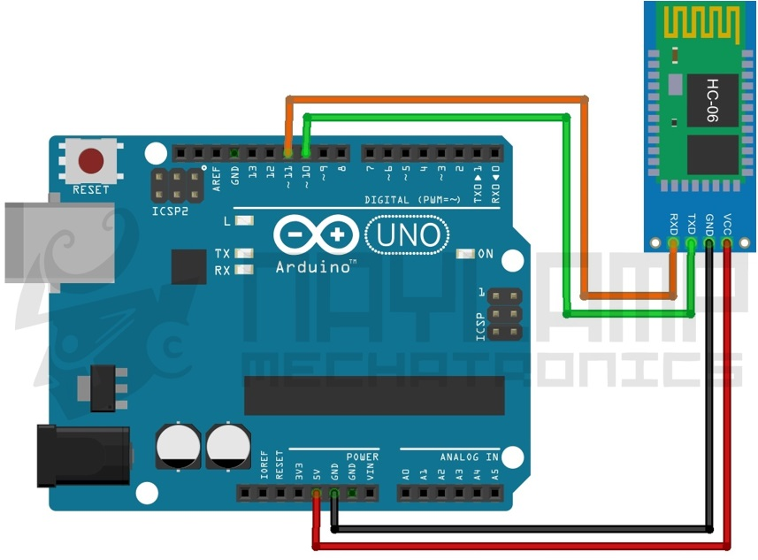
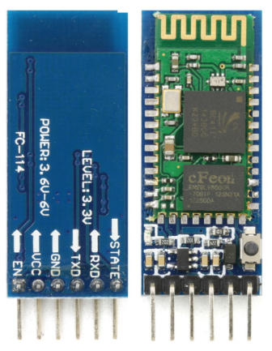
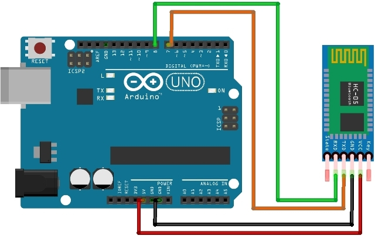

Bluetooth Setup and Baud Rate Changing Guide

Figure-1: HC-05 and HC-06 Bluetooth Modules
Grbl Firmware communicates with host interface or gui with a fixed (115200 v1.1) baud rate.
Any Bluetooth module you are using must use the same baud rate as the Grbl Firmware. Most of the Bluetooth modules ships with a default baud rate of 9600.
If you are going to use Bluetooth connection to control and run your CNC machine, then you must change the baud rete of the Bluetooth device to match with Grbl Firmware.
This guide will help you to change the baud rate of the most popular and common Bluetooth to serial modules HC-05 and HC-06.
HC-06 Bluetooth Module Setup
Figure-2 shows the HC-06 module with on-board voltage converter and level shifter. Most of Bluetooth modules works with 3.3v,
you must use a voltage converter from 5v to 3.3v and a level shifter for serial communication with Arduino since Arduino i/o pins has 5v output.
We will use Arduino Uno R3 and Arduino IDE to change the baud rate of the HC-06 Bluetooth module.
Hardware Connections
Connect the Bluetooth module to Arduino board as shown in the Figure-3.
- Connect Arduino PIN 10 to TXD of HC-06.
- Connect Arduino PIN 11 to RXD of HC-06.
- Connect GND of HC-06 GND of Arduino.
- Connect VCC of HC-06 to 5V of Arduino.
After this LED on the HC-06 should be blinking.
- Upload the attached sketch to you Arduino using arduino IDE.
- Open serial monitor in Arduino IDE (Menu Bar => Tools => Serial Monitor)
- Make sure you have selected a baud rate of 9600 (if you are not changed the baud rate of HC-06 before) in your serial monitor. (also select line termination as "both \r and \n")

Figure-2: Typical HC-06 Bluetooth to Serial Module

Figure-3: Hc-06 Arduino Connection Diagram
- Type "AT" in the serial monitor with out " and press enter. You should see a response "Ok", if not then make sure you have followed the above steps correctly.
- Type "AT+VERSION" in the serial monitor without " and press enter. You should be able see the firmware version.
- Type "AT+BAUD8" in the serial monitor with out " and press enter. The baud rate should be changed by now.
Bellow is the list of other baud rates.
AT+BAUD1 baud rate 1200
AT+BAUD2 baud rate 2400
AT+BAUD3 baud rate 4800
AT+BAUD4 baud rate 9600
AT+BAUD5 baud rate 19200
AT+BAUD6 baud rate 38400
AT+BAUD7 baud rate 57600
AT+BAUD8 baud rate 115200
AT+BAUD9 baud rate 230400
AT+BAUD10 baud rate 460800
AT+BAUD11 baud rate 921600
AT+BAUD12 baud rate 1382400
NOTE: If your Bluetooth module has default baud rate other than 9600, then you might want to try by changing the baud rate in the Arduino sketch.
hcSerial.begin(9600); // software serial Arduino to HC-06 (9600 is default)
#include <SoftwareSerial.h>
SoftwareSerial hcSerial(10, 11); // RX, TX
String fromPC = "";
void setup() {
Serial.begin(9600); // hardware serial for the USB-PC
hcSerial.begin(9600); // software serial Arduino to HC-06 (9600 is default)
// print instructions
Serial.println("HC-06 AT Command Programming");
Serial.println(" -- Command Reference ---");
Serial.println("AT (simply checks connection)");
Serial.println("AT+VERSION (sends the firmware verison)");
Serial.println("AT+NAMExxxxx (to change name to xxxxx");
Serial.println("AT+PINnnnn (to change password to 4 digit nnnn");
Serial.println("AT+BAUDn (to change to baud rate #1");
Serial.println(" BAUD1 = 1200");
Serial.println(" BAUD2 = 2400");
Serial.println(" BAUD3 = 4800");
Serial.println(" BAUD4 = 9600");
Serial.println(" BAUD5 = 19200");
Serial.println(" BAUD6 = 38400");
Serial.println(" BAUD7 = 57600");
Serial.println(" BAUD8 = 115200");
}
void loop() {
// Read from HC-06
if (hcSerial.available()) {
while(hcSerial.available()) { // While there is more to be read, keep reading.
Serial.print((char)hcSerial.read());
}
}
// Read from PC
if (Serial.available()){
delay(10); //
fromPC = (char)Serial.read();
if (fromPC == "r" || fromPC == "n") { // don't send carriage returns to HC-06
Serial.println(); // echo it back to the PC
}
else {
hcSerial.print(fromPC); // show the HC-06 responce
Serial.print(fromPC); // echo it back to the PC
}
}
}
HC-05 Bluetooth Module Setup
HC-06 and HC-05 are similar, but HC-05 has more features it can work as master and can create connection with other Bluetooth devices.
Typical HC-05 module will look like Figure-4. HC-05 has a 6 pin header rather than 4 pin header HC-06.
The two extra pins are state and enable (en). Some HC-05 module also comes with a on bord button wich can be used to enter AT command mode.
Main parts of the HC-05 module
- 3.3V low dropout regulator, which allows you to power it from 3.6V to 6V.
-
An LED to show the current working mode of the module.
- Fast Blink: Waiting for Bluetooth connection
- Slow Blink: In AT command mode
- Double Blink: Connected via Bluetooth
HC-05 can be put into AT command mode by holding the switch during power-up, LED will blink slowly at regular intervals to indicate the AT command mode.
AT Mode accepts commands at 38400 baud , N,8,1 using the Rx and Tx pins.
Below are the commands to configure the HC-05 for slave mode, each command must be followed by a line feed and carriage return.
AT+VERSION? (firmware version info)AT+ROLE=X (0: Slave Mode, 1: Master Mode, 2: Slave-Loop Mode, default = 0)AT+NAME=XXXX (change name to XXXX default=HC-05)AT+PSWD=1234 (change password to 4 digit number 1234, default = 1234)AT+UART=X,S,P (X=Baud, S=stop bits (0=1, 1=2), P=parity (0=None, 1=Odd, 2=Even) Example AT+UART=115200,1,0AT+ORGL (reset all parameters to defaults)

Figure-4: Tipical HC-05 Bluetooth Module
Using an Arduino Uno to Program HC-05 Bluetooth Module

Figure-5: Wiring Diagram Arduino Uno and Bluetooth HC-05
We have to setup 2 serial links.
One link will be from the PC to the Arduino to send the commands from the keyboard over USB.
Another will be a serial connection from the Arduino to the HC-05.
We will use a software serial port for this and can use any remaining pins to do this.
HC-05 uses 38400 baud for AT commands, regardless of the what you set it to for Bluetooth operation.
You can then type AT commands in the Arduino Serial Monitor.
#include
SoftwareSerial BTSerial(10, 11); // RX | TX
void setup() {
pinMode(9, OUTPUT); // this pin will pull the HC-05 pin 34 (key pin) HIGH to switch module to AT mode
digitalWrite(9, HIGH);
Serial.begin(9600);
Serial.print("For Arduino Rx use pin ");
Serial.println(10);
Serial.print("For Arduino Tx use pin ");
Serial.println(11);
Serial.println(" -- Command Reference ---");
Serial.println("To Read use '?', Like AT+PSWD?");
Serial.println("AT (simply checks connection)");
Serial.println("AT+VERSION (requests the firmware verison)");
Serial.println("AT+ROLE=x (0 =Slave role, 1 = Master role, 2 = Slave-Loop role default = 0)");
Serial.println("AT+NAME=xxxxx (to change name to xxxxx default=HC-05");
Serial.println("AT+PSWD=nnnn (to change password to 4 digit nnnn default = 1234");
Serial.println("AT+UART=nnnn,s,p (nnnn=Baud, s=stop bits (0=1, 1=2), p=parity (0=None, 1=Odd, 2=Even)");
Serial.println("AT+POLAR=a,b (a=PIO8 (LED), b=PIO9 for both 0=low turn on, 1 = high turn on.");
Serial.println("AT+ORGL (reset all parameters to defaults)");
Serial.println("AT+RESET (restarts the HC-05. Will not be in AT mode afterward unless button held");
Serial.println("Enter AT commands:");
BTSerial.begin(38400); // HC-05 default speed in AT command more
}
void loop() {
// Keep reading from HC-05 and send to Arduino Serial Monitor
if (BTSerial.available())
Serial.write(BTSerial.read());
// Keep reading from Arduino Serial Monitor and send to HC-05
if (Serial.available())
BTSerial.write(Serial.read());
}